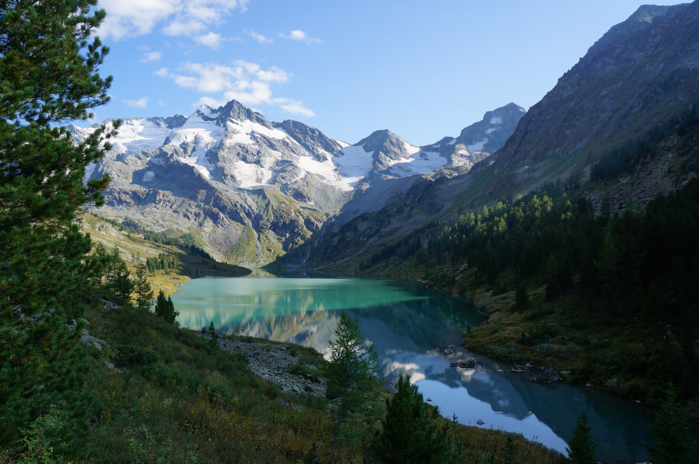

Мультинские озера
Лёгкий, но невероятно красивый тур по Алтаю к Мультинским озёрам! Неспешные прогулки вдоль озёр и горных рек, мимо завораживающих горных видов, сквозь таёжные леса с грибами и ягодами. Возможность отдохнуть в красивом первозданном уединённом уголке. Ночёвки в палатках на берегах кристально чистых озёр. Прогулки по заповеднику. Посиделки у костра с интересной компанией. Необычайно звёздное небо, снежные пики, приветливые «лесные жители», чистейший воздух и непередаваемая энергетика Алтая. И всё это в формате лёгких прогулок, без таскания тяжёлых рюкзаков, без преодоления перевалов и без длинных переходов. Мультинские озера – живописный озерный каскад на Алтае. Между собой их соединяет река Мульта - приток знаменитой Катуни. Роскошные горные панорамы на высоте 2 тыс. метров. Местные красоты притягивают туристов из самых разных регионов страны.
Алтай
Алтай считается красивейшим регионом России. Его визитной карточкой являются горы, реки и озера. Сюда, в частности, приезжают, чтобы своими глазами увидеть знаменитые Мультинские озера.
| ← | → |
Катунский хребет
В Республике Алтай есть Усть-Коксинский аймак. Так на горно-алтайском языке называется район. Через него проходит Катунский хребет – горный массив протяженностью 150 км. Высочайшей вершиной хребта считается гора Белуха, достигающая высоты 4506 м. На леднике Геблера находятся истоки знаменитой алтайской реки Катунь. А на северном склоне массива раскинулся целый озерный каскад. Это и есть Мультинские озера. Свое имя они получили по реке Мульта. Она протекает сквозь три озера и впадает в Катунь. Следует заметить, что в ее бассейне имеются и другие горные озера. В общей сложности их насчитывается более четырех десятков. В низовьях реки расположено село Мульта. Отсюда обычно и стартуют маршруты к Мультинским озерам.